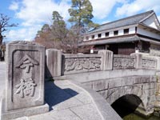
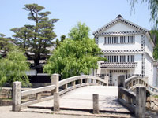
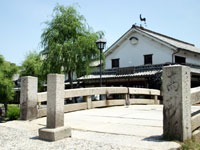
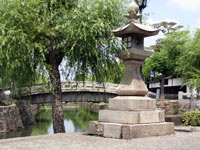
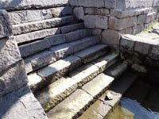
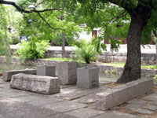

KURASHIKI RIVER倉敷川
 倉敷川周辺の地域は江戸時代に港町として栄え、この地域に物資を運んでくる運河として利用されていました。
現在の倉敷川の川幅は10メートル程ですが、船による物資の輸送がされていた頃には川幅20メートル程あったとされています。最も栄えていた時期には、約40隻の船が物資の運搬を行っていたとされています。
倉敷川周辺の地域は江戸時代に港町として栄え、この地域に物資を運んでくる運河として利用されていました。
現在の倉敷川の川幅は10メートル程ですが、船による物資の輸送がされていた頃には川幅20メートル程あったとされています。最も栄えていた時期には、約40隻の船が物資の運搬を行っていたとされています。
その後、周辺の開拓が進み、船による運搬も制限されるようになり1959年（昭和34年）に児島湾締切堤防が作られてから倉敷川は運河として利用されなくなり、機能を失います。
1968年（昭和43年）に観光ブームがきっかけとなり、倉敷川の整備が行われました。
1979年（昭和54年）には、倉敷川畔が重要伝統的建造物群保存地区に指定されました。
現在も江戸時代からの風情を残し、橋や船着場などは様々な形で残されています。
また、この地域が倉敷と呼ばれるようになったのは、江戸時代の初期頃に倉敷川をはさんで建てられた物資貯蔵用の土蔵のことを 蔵屋敷、倉鋪、蔵鋪、倉子城などの名称で呼ばれており、これが変化して倉敷になったといわれています。
今橋（いまばし）

児島虎次郎がデザインしたもので、菊の紋と龍の彫刻が彫られています。また、橋げたの形を半円にして、水面に映る半円の影と合わせて、満月を見ることが出来るように工夫されています。
中橋（なかばし）

土橋、板橋を経て、1877年（明治10年）に石橋に架け替えられて今に至る。橋げたが一枚石の太鼓橋でアーチ状に設計されており、下に船が通れるようにと配慮されています。
高砂橋（たかさごばし）

江戸時代末期の建てられたもので元の今橋です。1926年（大正15年）に大原美術館前に現在の今橋が架けられたときに 旧高砂町（現在の中央二丁目）に移され、高砂橋と改名されました。1967年（昭和42年）に倉敷用水や美観地区の整備によって現在の位置（美観地区南側）に移されています。
常夜灯（じょうやとう）

倉敷川が運河だった頃の「川灯台」として1791年（寛永3年）に設けられました。元は、前神橋の船着場に設置されていましたが、改修により20数年前から現在の倉敷館向かいの場所へ移されています。
雁木（がんぎ）

倉敷川を利用した輸送が盛んであった江戸時代の頃に、舟から荷揚げ、荷下ろしをするために据えられていました。江戸時代に築かれたとされるものは美観地区内に７基あり、伝統的建造物郡保存地区の工作物として指定されています。
倉紡製品原綿積み降ろし場跡

倉敷紡績工場への原料や製品などの積み降ろしが行われていた場所。アイビースクエア西門（旧倉敷紡績工場）から正面に位置しています。
一覧に戻る